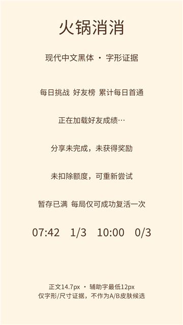
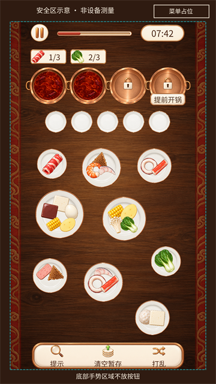

HC-01-v9 Accepted。仅字形与几何证据，不是 TASK-001 v9 A/B 皮肤候选，也不是微信实机截图。


左图使用项目已批准 Noto Sans CJK 文件；现代黑体标题遵循 HC-01-v9-r1。右图旧 v8 皮肤仅作保持同一 420×900 坐标映射的几何示意，由 PM 确认可保留。实际安全区和微信菜单矩形必须运行时取得；不能把示例的上下留白作为设备常量。
字库、可读性与安全区规范 · 1080 原图 · 几何原图
早期 typography.png 与 readability-board.png 含旧展示字体，已被现代字形证据取代，仅留作过程历史。未制作字体子集、未修改资源或导出包。